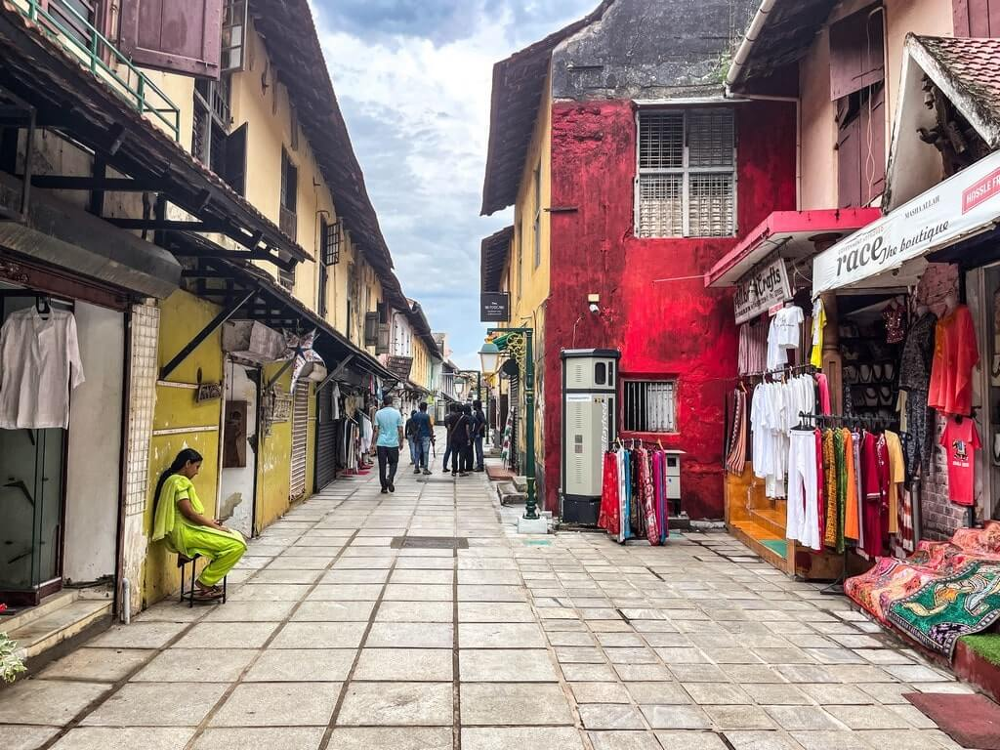

Hobbies are a source of ability, interest, and efficiency that allows us to fully develop different sides of our personalities. Hobbies are great distractions from the worries and troubles that plague daily living, – Bill Malone. In childhood, we spend a lot of time playing, exploring and developing, but as we become older, responsibilities, chores, and professions take over our lives. While those are definitely important, it’s also critical to allow yourself some quality leisure time.
Reading Books
My favorite books include
- The Alchemist by Paulo Coelho
- The Monk Who Sold His Ferrari by Robin Sharma
- Rich Dad Poor Dad by Robert Kiyosaki and Sharon Lechter
The Alchemist is a classic novel in which a boy named Santiago embarks on a journey seeking treasure in the Egyptian pyramids after having a recurring dream about it and on the way meets mentors, falls in love, and most importantly, learns the true importance of who he is and how to improve himself and focus on what really matters in life.
The Monk Who Sold His Ferrari tells the extraordinary story of Julian Mantle, a lawyer forced to confront the spiritual crisis of his out-of-balance life, and the subsequent wisdom that he gains on a life-changing odyssey that enables him to create a life of passion, purpose and peace.
a book that came out in 1997 and focuses on the importance of financial literacy from an early age. Throughout the book, the author explains how a person can increase their wealth by investing in assets and by being smart with money.
Travelling
“…whether through envy or pity or simple foreign ness, which allows it to drift away from the rest of your life story, until the memory itself feels out of place, almost mythical, wandering restlessly in the fog, no longer even looking for a place to land.”
A potpourri of all things Asian, Malaysia is a country in Southeast Asia. An intriguing blend of diverse wildlife, idyllic islands, magnanimous mountains, rainforests, and rich culinary landscape makes it one of the most visited tourist places in Asia.


Kochi is an enchanting city situated on the southwest coast of India in the state of Kerala. Popularly known as 'Queen of the Arabian Sea', it is a flourishing port city showcasing a rich blend of mesmerising natural beauty and vibrant culture.


The addition of the lush vegetation, the misty roads, and the excellent Ooty locations make this area beautiful. Some of the top tourist destinations in Ooty are the Nilgiris, popularly known as the Blue Mountains, where eucalyptus trees emit a misty blue haze early in the morning

Mysuru is famous in the world for its sandalwood and rosewood artifacts, stone sculptures, incense sticks, inlay work with ivory and its exquisite silk sarees. Mysuru emerged to be one of the major IT hubs in Karnataka. Mysuru is second in state for software exports.
Cleaning & Organizing
Cleaning does have a certain charm to it. Something about cleaning your environment makes you feel at peace with the world.
- Boredom Is Relieved By Cleaning
- Anxiety Sometimes Motivates Hobby Cleaning
- Perfectionism Can Drive Hobby Cleaning
- Nurture
Emotions are powerful motivators that must have safety release valves. Cleaning can provide that release in a way that minimizes damage.